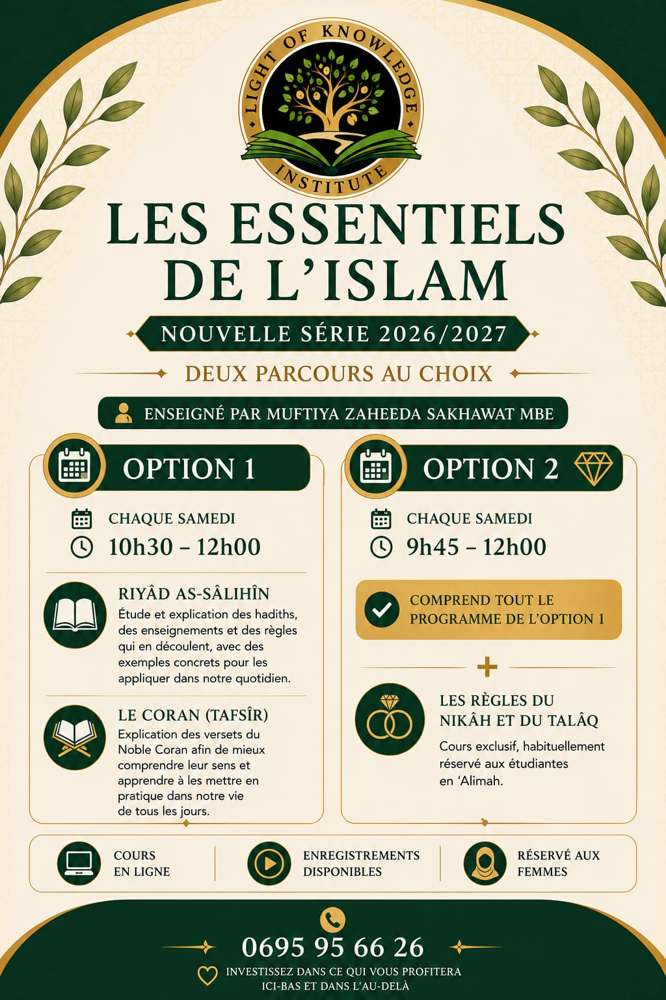

Sciences islamiques
Les Essentiels de l'Islam
Un programme hebdomadaire destiné aux femmes souhaitant approfondir leurs connaissances islamiques à travers l'étude des hadiths, du Tafsīr et de différents enseignements essentiels.
- Cours en ligne
- Tous les samedis
- Option 1 : 300 €
- Option 2 : 350 €
- Enregistrements disponibles
- Réservé aux femmes
- Accès au cours Développer un caractère islamique inclus
Enseignante : Muftiyah Zaheeda Sakhawat MBE
Découvrir la formation